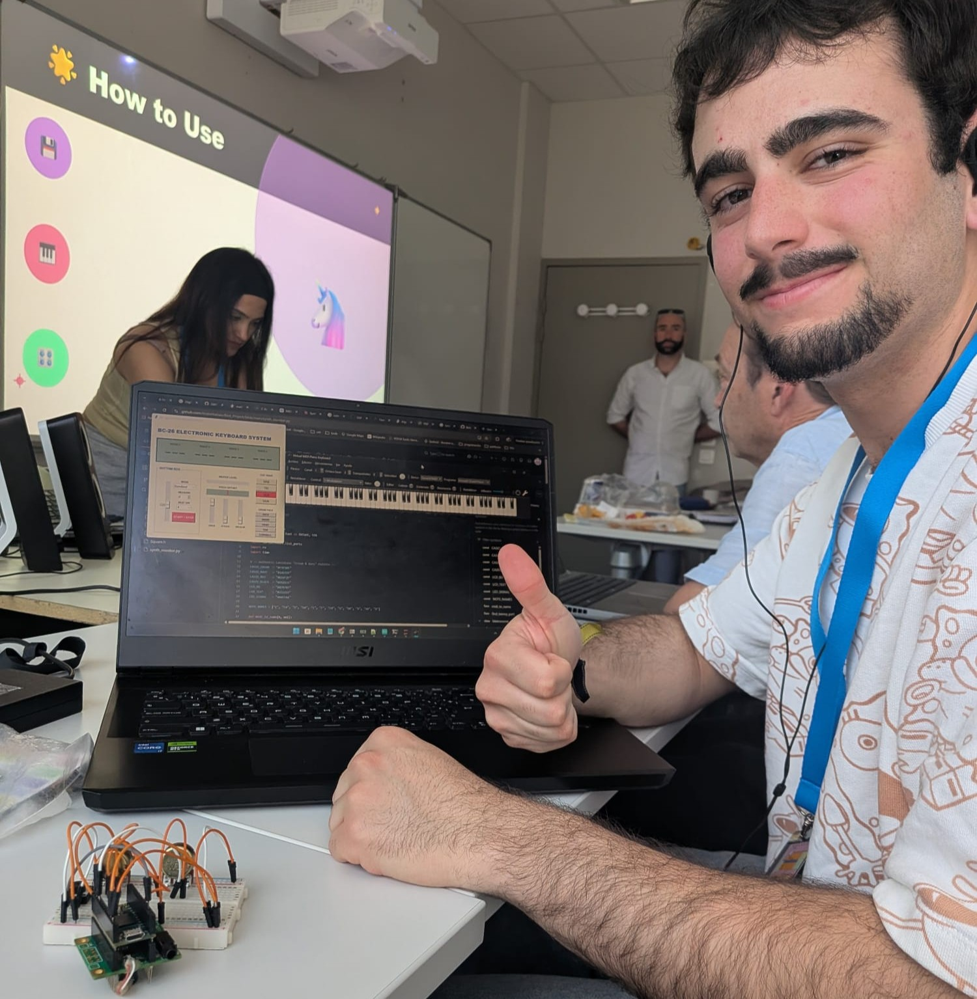
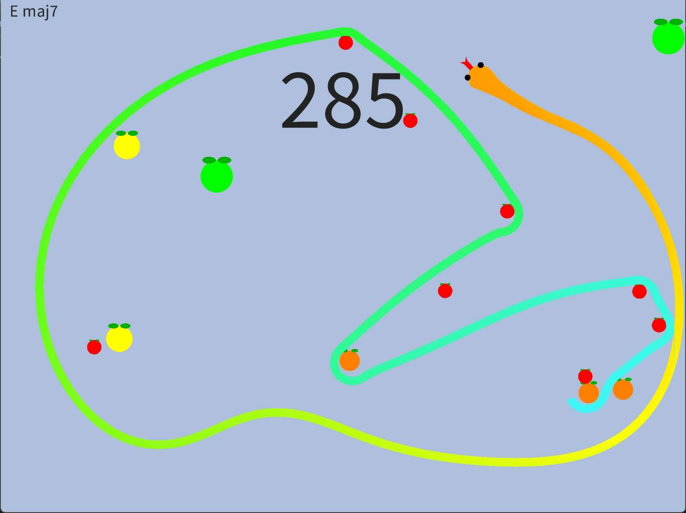
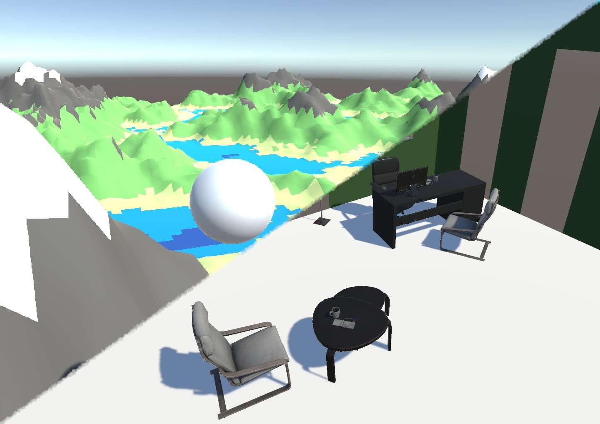

Embedded C++ & Digital Signal Processing (DSP)
April 2026
Sound synthesis algorithms, digital audio filters and C++ programming for low-level embedded systems (INSA Lyon).
View experiment →Computer Engineer - Video Game Developer
A space dedicated to small tech demos, algorithmic prototypes, research projects and technical explorations outside the flow of commercial game development.

April 2026
Sound synthesis algorithms, digital audio filters and C++ programming for low-level embedded systems (INSA Lyon).
View experiment →
August 2025
An exploration of real-time procedural joint animation and generation of harmonic chords based on the circle of fifths and probability matrices.
View experiment →
2023/2024
Prototypes and base algorithms used for the workshop taught at the Try IT! Congress on terrain generation and heightmaps.
View workshop details →